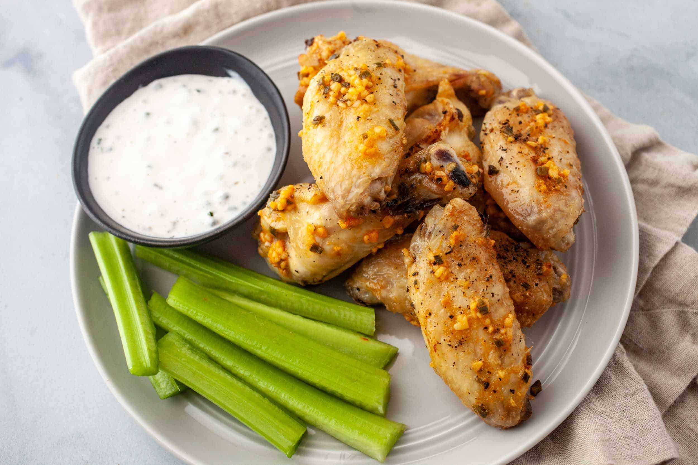

Garlic Butter Chicken Wings

If you love chicken wings like us but are looking for a variation from the classics like buffalo wings, then you must try this rich and comforting recipe. Although they're full of flavor, they're also milder than a lot of chicken wing recipes if you're looking to avoid anything too spicy.
Heres the Ingredients:
- chicken wings
- kosher salt
- black pepper
- Butter with Canola Oil
- dried granulated garlic
- dried chives
- hot sauce
- Ranch or blue cheese sauce for dipping
Heres the Instructions:
- Preheat oven to 400˚F. Line two baking sheets with foil and place wire baking racks on top. Lay out wings on wire racks and season with salt and pepper.
- Bake chicken wings for 30 minutes.
- Meanwhile, in a small saucepan stir together butter with canola oil, granulated garlic, chives, and hot sauce over low heat. Keep warm but dont simmer the mixture.
- Place wings back on baking racks and spoon extra garlic butter mixture on each wing.
- Bake for a second time for 10-15 minutes until wings are crispy.
- Serve baked wings with ranch or blue cheese sauce for dipping!